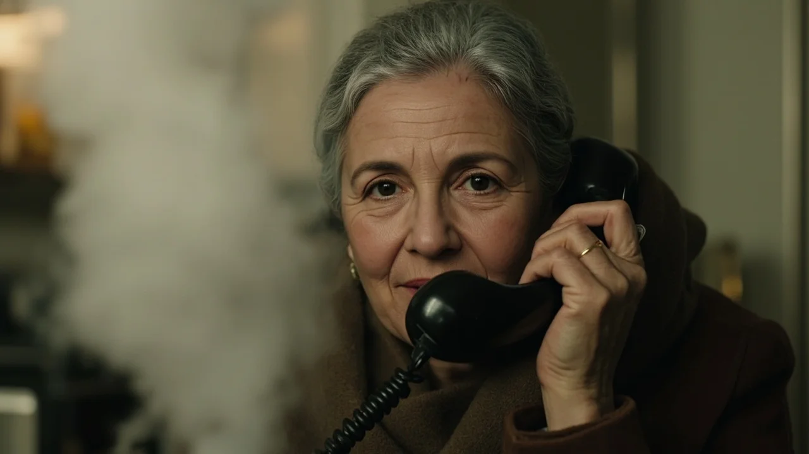
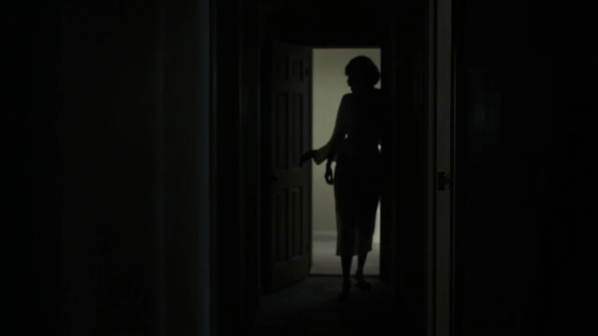
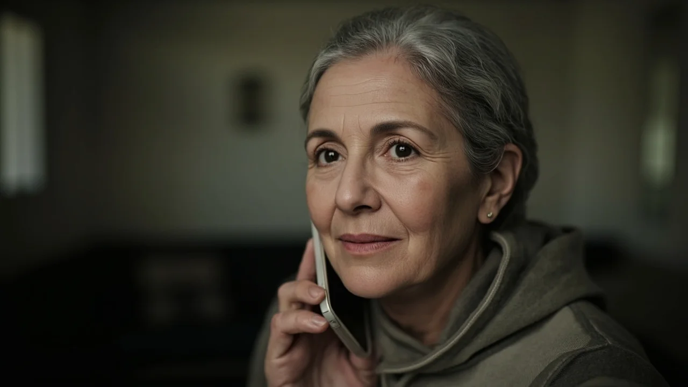
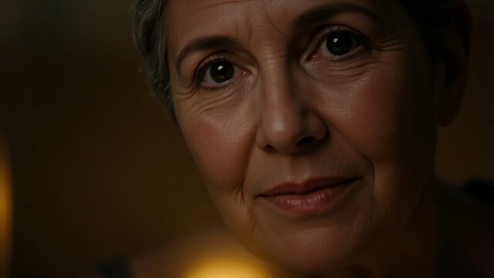
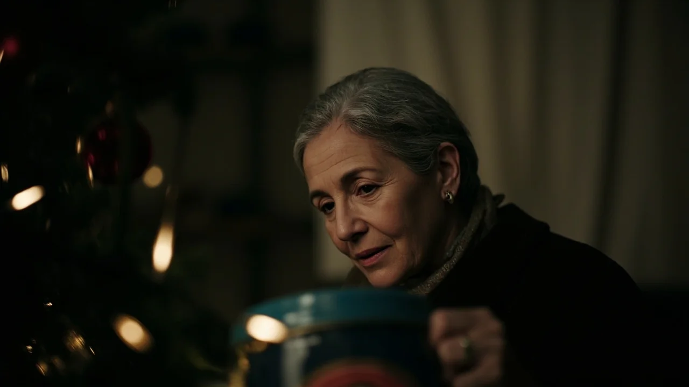

El teléfono fijo sonó dos veces antes de que Elena alcanzara el auricular con la bayeta húmeda en la mano. Eran las once de la mañana del veintidós de diciembre y el caldo de ave empezaba a templar los cristales de la cocina.
—Mamá, soy Carlos —dijo la voz al otro lado, recortada por el rumor del tráfico—. Se ha complicado la guardia del veinticuatro. Doblo turno de noche. No podré subir a cenar.
Elena miró la olla de porcelana. En la despensa esperaban ya la merluza, el pollo de corral y los dos kilos de langostinos que había comprado a primera hora en el mercado, cargando el carro con la espalda doblada.
—No te preocupes, hijo —respondió con la voz pulida por la costumbre—. Lo primero es el trabajo.
—Lo siento mucho. Intentaré escaparme en Año Nuevo para el café.
—Claro que sí. Lo importante es que estés tranquilo.
Colgó. El silencio del pasillo volvió a caer de golpe. Aquella misma mañana, su hija Carmen le había dejado un mensaje diciendo que pasaría la Nochebuena en Valencia con los suegros, y Lucía, la menor, había llamado la víspera con el llanto del bebé de fondo para avisar de que viajar con dos niños pequeños bajo el temporal de nieve era imposible.
Las tres respuestas de Elena habían sido idénticas: «No pasa nada, lo importante es que estéis bien».
Y las tres veces, una punzada amarga se le instalaba bajo el esternón. En los últimos cuatro inviernos, desde que murió Antonio, la escena se repetía como una coreografía ensayada. Ella cocinaba para un batallón, ponía los cinco platos de fiesta sobre el mantel bordado de lino blanco y terminaba cenando sola frente al televisor, convenciéndose de que sus hijos eran unos desagradecidos.
A media tarde, buscando la caja de los adornos en el armario del dormitorio, Elena arrastró la escalera de dos peldaños hasta el altillo.
En el rincón más oscuro, detrás de dos mantas que olían a alcanfor, su mano tropezó con una lata metálica de galletas. La chapa azul estaba rayada y tuvo que forzar la tapa con unas tijeras.

Esperaba encontrar fotos carnet o facturas viejas. Lo que apareció fue un mazo de sobres cerrados, atados con una cinta de zapatillas de ballet gastada.
Eran cartas escritas con su propia letra redondeada, de tinta azul marino, fechadas entre finales de los ochenta y mediados de los noventa. Cartas que Elena había escrito de noche, cuando Antonio dormía roncando con pesadez y los tres niños descansaban en sus literas. Cartas que jamás llegó a enviar porque le parecieron demasiado crudas o sentimentales, convenciéndose de que ya habría ocasión de decir aquellas cosas cara a cara cuando fueran mayores.
Se sentó en el borde de la cama, bajo la luz mortecina de la lámpara de mesilla. Desató la cinta.
La primera carta estaba fechada en noviembre de mil novecientos ochenta y nueve, dirigida a Carlos con ocho años:
«Hijo mío, hoy te he gritado porque no terminabas los deberes de matemáticas y te has quedado dormido con la frente apoyada en el cuaderno. No te he gritado por los números. Te he gritado porque tu padre lleva tres meses sin traer un sueldo fijo y tengo tanto miedo de que nos falte de comer que siento que si tú no eres perfecto y fuerte, esta familia se desmorona. Te exijo como a un hombre adulto porque me da pánico mirarte y reconocer que solo eres un niño asustado, y que yo no sé cómo protegerte».
A Elena se le encogió la garganta. La imagen de Carlos con ocho años bajo la bombilla de la mesa camilla regresó con dolorosa nitidez.
Abrió otra de mil novecientos noventa y cuatro, dirigida a Carmen con doce años:
«Ayer volviste a escuchar las voces en la cocina. Cuando tu padre se marchó dando un portazo, viniste a secarme las lágrimas y te pedí que no me dejaras sola, que tú eras la única que me entendía. Perdóname. No deberías tener que sujetarme ni conocer los desamores de mi matrimonio. Te estoy obligando a ser mi madre en vez de dejarte ser mi hija, y me da tanto miedo quedarme sola en este salón que prefiero robarte la infancia antes que aprender a sostenerme yo misma».
El papel crujió entre sus dedos temblorosos. En cada pliego, la versión que Elena guardaba de sí misma se iba resquebrajando.
Durante años se había contado el cuento piadoso de la madre perfecta: la que nunca se quejaba, la que renunciaba a los abrigos nuevos, la que esperaba despierta el cerrojo. Pero la tinta no mentía. Entre aquellas líneas no había solo amor; había chantaje encubierto. Había un empeño feroz en hacer que sus hijos se sintieran en deuda para garantizarse que nunca se marcharían lejos. Había utilizado el sacrificio como una cadena invisible.
La última carta era para Lucía, meses antes de que cumpliera dieciocho y se marchara a estudiar a Granada:
«Sé que cuentas los días para irte de esta casa, Lucía. Cada vez que sonríes mirando la ventana me da una rabia sorda, porque siento que tu alegría empieza donde termino yo. Cuando te digo que me dan mareos si te quedas a dormir fuera, te miento. Solo quiero que sientas pena, porque la pena es lo único que conozco que mantiene a la gente atada a una silla».

Elena dejó caer los papeles sobre la colcha. Se llevó las manos a la cara y rompió a llorar en silencio.
La mañana del veintitrés amaneció gris y fría. Elena bajó a la papelería del barrio y compró tres sobres de hilo verjurado y un bolígrafo nuevo de tinta fluida.
Subió a su piso y se sentó a la mesa del comedor. Durante cuatro horas escribió sin tachones, con mano firme y respiración pausada. No escribió cartas de disculpa dramática ni sermones. Escribió la verdad desnuda, sin exigir nada a cambio.
A Carlos le reconoció que jamás le había dicho que estaba orgullosa de su trabajo porque temía que, si lo alababa, él comprendería que ya no necesitaba la aprobación de su madre para vivir. Le pedía perdón por haber descargado sobre sus hombros de niño el peso del hogar y le deseaba una guardia tranquila, libre de la obligación de redimir a nadie.
A Carmen le devolvió la libertad de no ser su guardiana. Le confesaba que sus problemas matrimoniales pertenecían al pasado y a ellos dos solos, y que su única tarea como hija era cuidar de su propia vida y de sus proyectos, sin cargar con la tristeza ajena.
A Lucía le confesó que el amor maternal no podía ser una jaula construida con chantajes de salud ni con silencios de reproche. Le decía que la admiraba por haber formado una familia valiente y que no necesitaba que recorriera quinientos kilómetros con dos críos enfermos para demostrarle que la quería.
Al anochecer, Elena se abrochó el abrigo de paño, bajó a la calle y cruzó hasta el buzón amarillo de la esquina. Metió los tres sobres en la ranura. El chasquido sordo del papel al caer en el fondo le dejó en el pecho una quietud limpia, parecida a la que queda en una habitación cerrada cuando se abre por fin la ventana tras una tormenta.
El veinticuatro de diciembre amaneció con calma helada. Elena sabía que las cartas no llegarían por correo postal antes de Navidad. Pero no soportaba la idea de que la Nochebuena transcurriera bajo la misma farsa de siempre.
A mediodía fotografió los tres textos con el móvil y se los envió por mensaje privado con una nota breve: «Por favor, leed esto cuando tengáis un momento a solas».
A la una y cuarto, la pantalla se iluminó con el nombre de Carlos. Elena descolgó. Notó que le temblaba el labio superior.

—Hola, hijo.
Al otro lado hubo una pausa larga, acompañada por el rumor del pasillo del hospital.
—Mamá... he leído lo que me has mandado. Lo he leído dos veces en el vestuario.
Elena apretó los dedos contra el teléfono.
—No sé muy bien qué decirte —continuó su hijo, y por primera vez en muchos años, su tono era el del chaval de ocho años en la mesa camilla—. Llevo veinte años convencido de que si te fallaba en algo, si no venía a comer todos los domingos, te rompías en pedazos. Y a la vez me daba rabia sentirme así de atrapado.
—Lo sé, Carlos. Por eso tenía que decírtelo. La culpa no era tuya. Te puse una carga que no te correspondía, y me ha costado treinta años tener la decencia de quitártela de encima.
Carlos respiró hondo. Hubo otro silencio, pero ya no era un silencio hostil; era un espacio de tregua.
—Gracias, mamá. No sé qué más decirte ahora mismo. Tengo que entrar a planta.
—No tienes que decir nada más, hijo. Cuida a tus pacientes y descansa cuando puedas.
—Te llamo mañana por la mañana, mamá. De verdad.
—Cuando tú quieras. Un beso grande.
Colgó. Elena se apoyó en el marco de la cocina. Por primera vez en su vida adulta, había terminado una conversación con su hijo mayor sin exigirle una promesa de visita ni hacerle sentir culpable por marcharse.

A las ocho de la tarde, Elena tomó una decisión inédita.
No sacó el mantel bordado de lino blanco ni abrió el aparador para sacar los cinco platos dorados. Guardó los langostinos en el congelador y cocinó un lomo de merluza a la plancha con un chorro de aceite de oliva y un tomate aliñado.
Se puso un pantalón cómodo, una chaqueta de lana gris y sus zapatillas de paño. Puso un solo plato en la mesa de la cocina, una copa de vino tinto y una servilleta sencilla. Encendió la vela pequeña que Antonio solía comprar cada diciembre y apagó la luz del techo, dejando que la penumbra envolviera la estancia con serenidad tibia.
Estaba partiendo el primer bocado de pescado cuando el móvil comenzó a repicar con una videollamada entrante.
Era Lucía.
Elena aceptó la llamada y colocó el teléfono apoyado contra el salero. La pantalla se llenó de la imagen de su hija: el cabello revuelto, la sudadera manchada de papilla en un hombro y los ojos hinchados de haber llorado. De fondo se oían las risas de los dos críos jugando con cacerolas.
—Mamá —dijo Lucía, tapándose la boca con la mano—. ¿Estás cenando ya?
—Sí, hija. Un pescado muy rico y tranquilo.
Lucía bajó la mirada hacia la pantalla, mordiéndose el labio inferior para recomponerse.
—He leído tu mensaje esta tarde mientras los niños dormían la siesta. Mamá, yo... me sentía un monstruo por no ir este año. Llevo tres semanas con dolor de estómago pensando en ti cenando sola. Pensaba que me odiabas en secreto, que decías que no pasaba nada pero que en el fondo me considerabas una mala hija.
Elena la miró a través del cristal del teléfono. Vio la fatiga en los surcos de su cuello, la misma fatiga que ella había arrastrado con tres críos a cuestas.

—Lucía, mírame —le pidió con dulzura—. No te odio. Nunca te he odiado. Pero te enseñé a relacionarte conmigo a través de la lástima, y eso es lo peor que puede hacer una madre. Te enseñé que si no sufrías por mí, no me querías. Hoy he entendido que prefiero mil veces que te quedes en tu casa jugando con tus hijos sin pensar en mí, a que vengas aquí con un nudo en la garganta a cumplir con un trámite.
Lucía rompió a llorar, un llanto manso que le destensó las facciones de golpe.
—Es que no llego a todo, mamá. A veces siento que no soy buena madre, ni buena esposa, ni buena hija. Se me hace todo una montaña.
—Claro que se te hace una montaña, mi vida. Porque criar es muy difícil. Pero no tienes que demostrarme nada. La Navidad no es un examen. Si puedes venir en febrero o en marzo, nos comeremos unos churros en la plaza y pasearemos despacio. Ya no hay cuentas pendientes entre nosotras.
Madre e hija se quedaron mirándose a través de la pantalla durante un par de minutos, en un silencio cómplice que nunca antes habían compartido. No había reproches soterrados ni dobles sentidos. Solo dos mujeres adultas reconociéndose en sus límites.
—Mamá... mira —dijo Lucía secándose las mejillas con la manga—. Nico, Mateo, venid a saludar a la abuela Elena.
Los dos niños asomaron sus caras redondas frente a la cámara, enseñando un coche de plástico sin ruedas y cantando un villancico a gritos. Elena sonrió con el pecho ensanchado, riéndose con ellos hasta que la pantalla se despidió entre besos atropellados.
Cerca de la medianoche, tras fregar su plato y la sartén, Elena recibió un mensaje de texto de Carmen desde Valencia: «Mamá, gracias por tu carta. Me ha costado entenderla al principio, pero creo que la necesitaba más que tú. Hablamos con calma el día veintiséis. Te quiero».
Elena guardó el teléfono sobre la mesilla del recibidor y no volvió a mirarlo.
Caminó hasta el salón. El abeto pequeño de plástico brillaba con sus diminutas bombillas de color ámbar sobre la cómoda. No había cinco platos vacíos como un reproche mudo a la mesa. No había rencor contra el destino ni autocompasión por su vejez.
Abrió la lata azul de galletas, colocó las cartas antiguas en el fondo y, sobre ellas, depositó una cuartilla en blanco que había escrito para sí misma antes de cenar:
«Elena: has tardado sesenta y cinco años en aprender que amar no es retener, ni cobrarse favores, ni sacrificarse para exigir sumisión. Tus hijos ya son libres de ti; ahora te toca a ti ser libre de tus propios miedos. La casa está tranquila. No estás sola: estás contigo».
Cerró la lata, apagó las luces del árbol y se fue a dormir con una paz profunda y sin deudas.